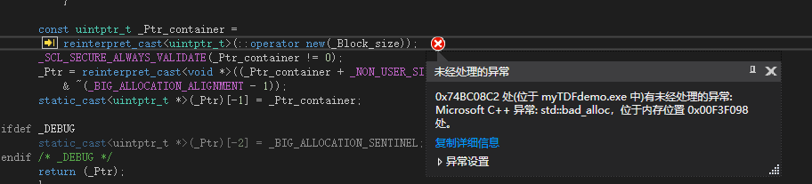

日常踩坑：C++32位程序申请大内存出现std:bad_alloc
问题背景：
在开发股票自动化交易软件过程中，我们需要将股票的tick数据（每3s一笔）存储下来，供我们的股票交易策略部分使用。这种情况下首先想到使用MySql这种关系型数据库进行存储，但是我们的股票自动化交易软件对速度的要求极高，可能相差几十毫秒就是赚钱与亏钱的区别，而MySql这种传统数据库的插入与查询是很慢的，无法满足我们的要求。当然我们也可以选择既满足存储数据的要求又能达到我们需要的速度要求的Redis这种内存数据库，但考虑到我们交易软件是日内交易，不需要股票数据持久化到硬盘上，而且经过大概估算，我们服务器的内存远大于股票每日的数据量，所以考虑将股票数据直接保存在内存中，软件运行时直接对内存中的股票数据进行使用即可。
问题描述：
我们使用map保存股票的数据，map的key是股票代码（string类型），value是该股票的行情数据（vector类型），然后建立行情类MarketData（单例模式）将map封装起来，并实现线程安全的插入数据和取数据的方法，这样就实现了一个极其简单的“内存数据库”。在MarketData建立后需要初始化股票数据，使用vector的reserve方法为每支股票预先分配足够存储一天数据的内存空间。代码如下：
1 | ///初始化mapStockData，初始化后该map节点位置不会再变化，避免多线程安全问题 |
上述代码在订阅股票数量较少（小于10支）的时候一直工作都很正常，昨天我们添加新的股票交易策略，新的策略需要订阅更多的股票（大概100支股票），这时候这段代码就出现了std::bad_alloc错误，即内存申请失败。

问题分析：
既然是内存分配错误，那我们就计算一下内存占用，经过计算，每支股票每天的数据量大约48M，一百支股票的占用就是4800M，总的数据量不到5个G，但我们服务器是64G内存，应该不存在内存不够用的情况。后来又推测是不是vector需要申请连续的内存，而恰好服务器内存不存在这么多连续的内存，细想一下这种可能性也不大。
没啥头绪就先把这个问题放下去吃饭了，在去食堂的路上，突然想到我们项目中使用的是x86模式，即我们的程序是32位的程序，虽然服务器是64位，但是32位的程序的寻址空间最大只有4G，所以程序是不会寻址大于4G的内存地址的，所以对我们程序而言，服务器64G的物理内存能用的只有4G，而且这4G也不是进程独占的，对于Linux系统而言，内核空间占用1G，32位程序最大的可利用内存只有3G，对于Windows系统而言，系统空间占用2G，32位程序最大可利用内存只有2G（堆内存1.6G左右）。2G内存只能存储大约40支股票，如果再考虑到内存碎片对vector请求连续内存的影响，可能只能存储20多支股票的数据，所以在我们订阅了100支股票的时候，就会出现内存分配失败的错误。
问题解决：
查阅资料得知：Windows操作系统有一个 boot.ini 开关，可以为应用程序提供访问3GB的进程地址空间的权限，从而将内核模式地址空间限定为 1 GB，从而用户模式地址空间可用3GB。这种方法虽然可以将可用内存增加1GB，但对我们上百支股票数据而言仍旧是杯水车薪。
最好的办法就是将应用程序按照x64模式重新编译，编译出来的程序便是64位程序，地址空间远远大于32位程序，此时，对程序分配内存的限制就只有物理内存大小，但我们的物理内存是完全足够的，更改了编译参数之后，上述内存申请失败的错误便不再出现。
总结：
当前，64位CPU和64位操作系统已经完全普及了，基于这些平台开发应用程序的时候，如果没有兼容32位系统的需求，应该优先考虑开发64位的应用程序，对于需要大量内存的程序尤为重要。